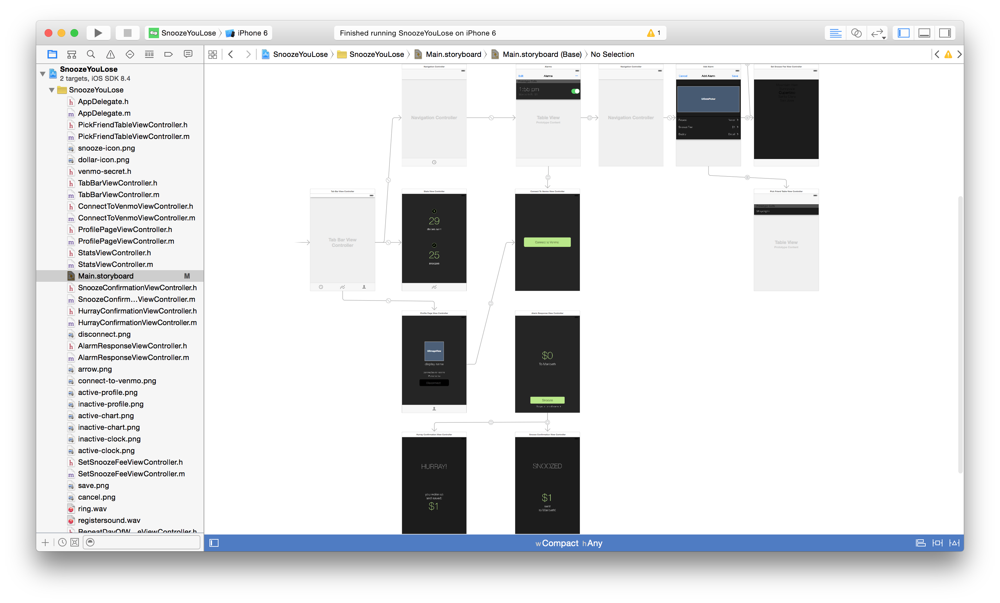

During MHacks Winter 2015, I worked on the iOS app SnoozeYouLose along with three friends. SnoozeYouLose is an alarm clock that sends money when you snooze.
I worked closely with our designer (with an Android background) to revise her specs to conform to iOS human interface conventions, and implemented her specs in the final product.
 SnoozeYouLose’s custom UI in XcodeI also suggested using cash register sound in this app when the user snoozes, which in the end makes the app much more fun to play with.
Codebase for this project can be found on GitHub.